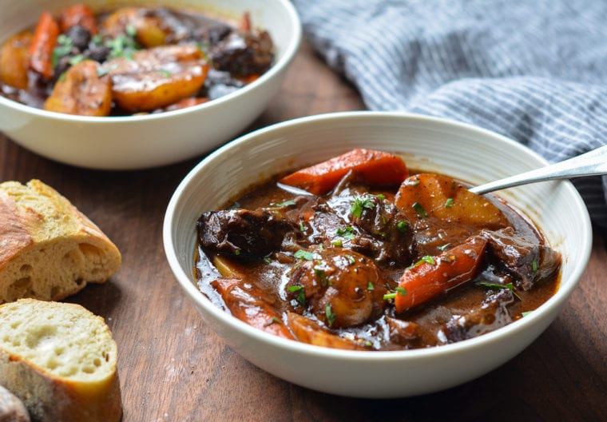

beef-stew

Description:
This classic French beef stew, otherwise known as Beef Bourguignon, is the ultimate comfort food. Chunks of well-marbled beef are seared in olive oil and then gently braised with garlic and onions in a wine-based broth. After a few hours in the oven, the meat becomes meltingly tender and enveloped in a rich, deeply flavored sauce.
It takes some time to make but I promise it’s well worth the effort. Aside from being delicious — it is my all-time most popular recipe — it’s a one-pot meal that feeds a crowd. You can also make it a day ahead; in fact, you should because the flavor improves the longer it sits.
Ingredients:
- 3 pounds boneless beef chuck (well-marbled), cut into 1-1/2-inch pieces
- 2 teaspoons salt
- 1 teaspoon freshly ground black pepper
- 7 cloves garlic, peeled and smashed
- 1-1/2 tablespoons tomato paste
- 2 cups beef broth
- /2 teaspoon dried thyme
- 1 pound small white boiling potatoes (baby yukons), cut in half
Fresh chopped parsley, for serving (optional)
Steps:
- first cut the beef whatever size you need.
- his step is a bit time-consuming but browning the meat adds depth and dimension to the stew. (Note: it’s important not to crowd the pan — if you try to brown all the meat at once, it will steam instead of sear and you won’t get all that lovely color and flavor.)
- Remove the meat and add the onions, garlic, and balsamic vinegar to the pan. The vinegar will loosen all the brown.
- Add the wine, broth, water, thyme, bay leaves, and sugar.
- After 2 hours, add the carrots and potatoes.
- Return to the oven and continue cooking for one hour, or until the meat is fork-tender, the broth is thickened, and the carrots and potatoes are tender.
HomePage